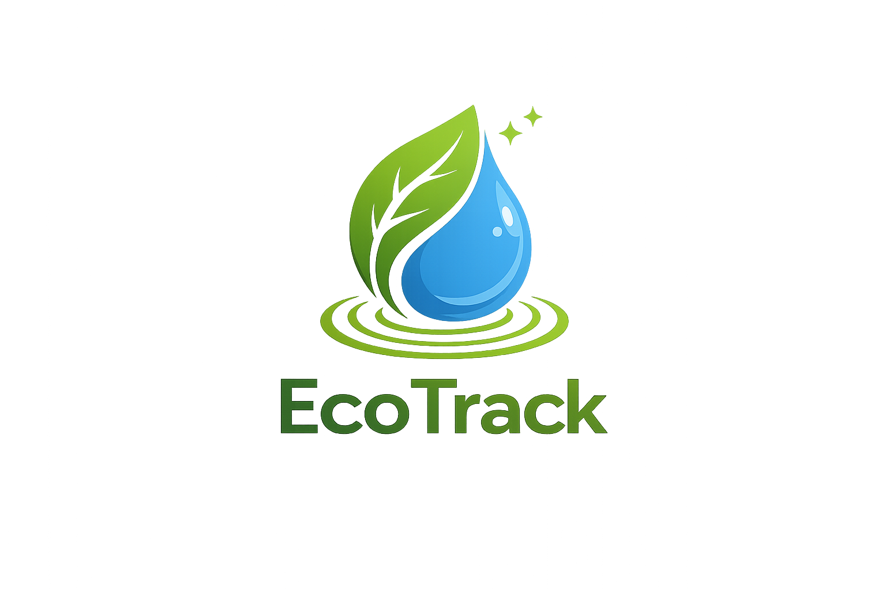
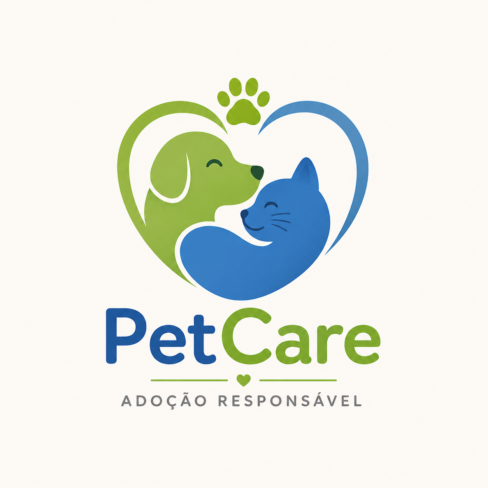

Avaliado
Avaliado
Symploke
Plataforma de cursos profissionalizantes para grupos minoritários.
5 integrantes
15/05/2024
Avaliar com rubrica
Professor
Visualize e gerencie todos os projetos enviados pelos alunos.
Avaliado
Plataforma de cursos profissionalizantes para grupos minoritários.
 Em avaliação
Em avaliação
Plataforma para facilitar denúncias por mulheres vítimas de assédio.
 Avaliado
Avaliado

AvaliadoAplicativo para monitoramento e redução do consumo de água.

Em avaliaçãoSistema de gestão nutricional para restaurantes universitários.